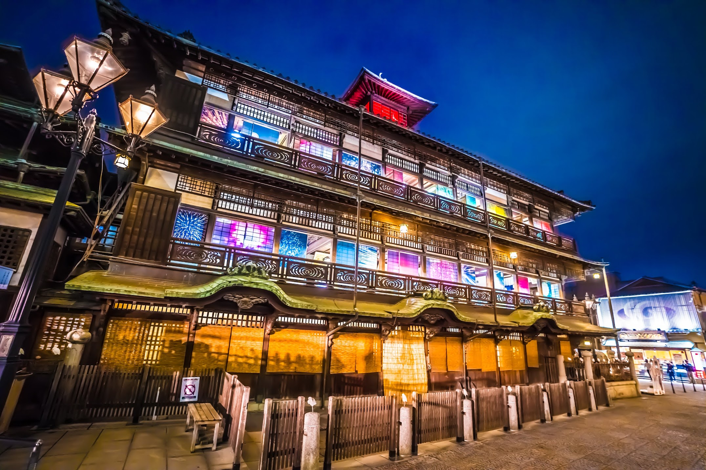
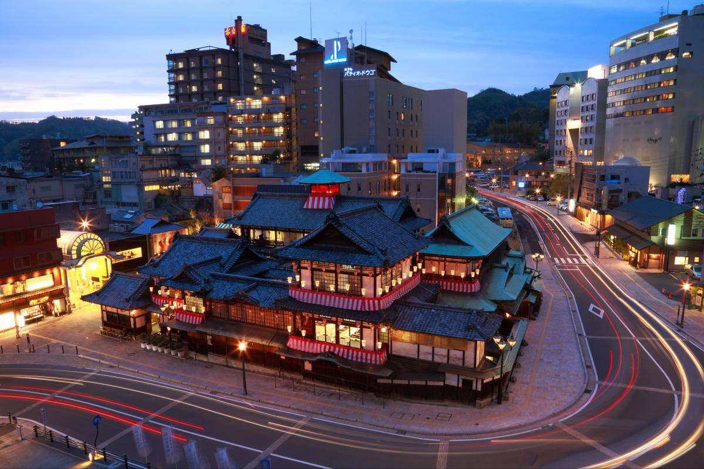

愛媛県松山市にある道後温泉は、日本最古の歴史を持つといわれる温泉地です。その歴史は古く、万葉集にも登場するほか、聖徳太子も訪れたという伝説が残されています。古くから多くの人々に愛され続けてきた、日本を代表する温泉です。


シンボルである「道後温泉本館」は、明治時代に建てられた風情ある木造建築です。公衆浴場として初めて国の重要文化財に指定され、迷路のような館内や伝統的な建築を見ることができます。
温泉に入ったあとは浴衣を着て「道後ハイカラ通り」を散策するのも楽しみの一つです。愛媛の名産品であるみかんを使ったスイーツや、新鮮な海の幸を使った鯛めしを味わうことができます。